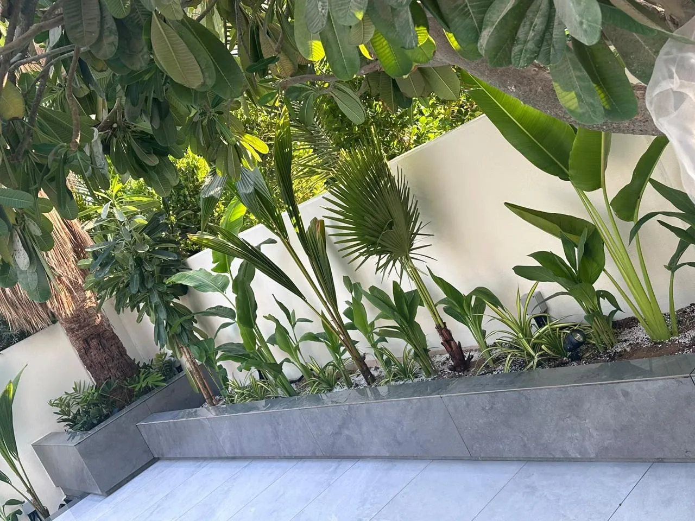

What makes a plant work in Dubai
The plants that do best here share a few qualities. They tolerate intense sun and heat, they cope with sandy, alkaline soil, they forgive slightly salty irrigation water, and they can survive a hot, dry wind. Many are native to the Gulf, the Middle East, Africa or the hotter parts of the Americas and Australia.
Just as important is where each plant goes. The same shrub can thrive in morning sun and scorch beside a west-facing wall. Good planting design starts with the light, shade and exposure of each part of the garden.
Trees
- Ghaf (Prosopis cineraria): the UAE's national tree. Native, extremely drought-tolerant once established, and gives light, dappled shade.
- Sidr (Ziziphus spina-christi): another tough native tree with dense shade and small edible fruit.
- Neem (Azadirachta indica): fast-growing, evergreen and widely planted for shade across the UAE.
- Royal poinciana (Delonix regia): a spreading canopy covered in red flowers in early summer. Give it room.
- Frangipani (Plumeria): sculptural, scented and happy in heat. Best in a spot sheltered from strong wind.
- Olive (Olea europaea): silver foliage and a Mediterranean feel that suits many villa styles. Mature specimens make a garden look established from day one.
Palms
- Date palm (Phoenix dactylifera): the classic choice. Tolerates heat, salt and wind, and suits coastal gardens.
- Washingtonia (fan palm): tall and fast-growing, good for height and for framing views.
- Bismarck palm (Bismarckia nobilis): huge silver-blue fan leaves that make a dramatic focal point. It needs space.
- Pygmy date palm (Phoenix roebelenii): compact, for courtyards, planters and smaller gardens.
- Foxtail palm (Wodyetia bifurcata): elegant and tropical-looking, but it wants more water and some shelter.
Mature palms and trees are usually delivered by truck and lifted in by crane. This needs planning for access, and approval from the community where a crane works from the road. We cover this in our guide to community approvals.

Flowering shrubs and hedges
- Bougainvillea: the Dubai favourite. Year-round colour on walls, pergolas and fences, and very heat-tolerant.
- Arabian jasmine (Jasminum sambac): wonderfully scented flowers near seating areas and entrances.
- Hibiscus: big tropical flowers. It needs regular water, so keep it on a good drip line.
- Lantana: tough, colourful and loved by butterflies.
- Texas sage (Leucophyllum frutescens): silver leaves and purple flowers, and very drought-tolerant.
- Yellow bells (Tecoma stans): bright yellow flowers through the hottest months.
- Natal plum (Carissa macrocarpa) and Clerodendrum inerme: dense, salt-tolerant hedges, good for privacy in coastal gardens.
- Oleander (Nerium oleander): very hardy and free-flowering, but every part is poisonous. Avoid it where young children or pets play.
Grasses, succulents and ground cover
- Ornamental grasses such as purple fountain grass add movement and soften paving.
- Succulents: aloe, agave, yucca and crown of thorns (Euphorbia milii) need very little water and look sculptural in gravel beds.
- Sea purslane (Sesuvium portulacastrum): a native, salt-tolerant ground cover for coastal gardens.
- Lawns: seashore paspalum and Bermuda grass are the usual choices. Read artificial grass or real grass in Dubai before deciding how much lawn you need.
For shaded courtyards and covered terraces
Shade changes everything. Under pergolas, between villas and in internal courtyards, lush tropical plants that would scorch in full sun can thrive: bird of paradise (Strelitzia), philodendron, monstera and alocasia, as long as they get regular irrigation.
Plants to think twice about
- Conocarpus: once planted everywhere as a fast hedge, it is now widely discouraged because its aggressive roots can damage pipes, drains and foundations.
- Thirsty temperate plants: roses, many flowering annuals and cool-climate shrubs struggle through the summer and need constant replacing.
- Poisonous plants near children and pets: oleander and some euphorbias have toxic sap.
How to plant so it survives the summer
- Plant between October and March. Plants then have the cooler months to establish roots before the heat arrives.
- Improve the soil. Dubai sand drains fast and holds few nutrients. Mixing in good soil and organic matter makes plants greener and less thirsty.
- Use drip irrigation on a timer, watering early in the morning or in the evening. Check and adjust it as the seasons change.
- Mulch the beds. Bark, gravel or pebbles keep roots cooler and cut evaporation.
- Plant in layers. Trees shade shrubs, shrubs shade the ground cover, and the whole bed shades its own soil.
- Protect new plants with temporary shade cloth during their first summer.
Our softscape work is led by our co-founder Banu, who chooses every plant for the light, heat and water of the individual garden. Meet Banu or see our softscape services.
Common questions
What is the best tree for shade in Dubai?
Neem, ghaf and sidr are reliable shade trees that cope with heat and drought. For a flowering canopy, royal poinciana is spectacular in early summer. The best choice depends on the space, the soil and how quickly you want shade.
When is the best time to plant in Dubai?
Between October and March. Planting in the cooler months gives roots time to establish before the summer heat. Summer planting is possible with careful irrigation and shading, but it carries more risk.
Which plants survive the Dubai summer with little water?
Ghaf, date palms, bougainvillea, Texas sage, lantana, aloe, agave and yucca all cope well with heat and need relatively little water once they are established.
Which plants are good for a garden near the sea in Dubai?
Date palms, bougainvillea, natal plum, Clerodendrum inerme, sea purslane and seashore paspalum lawns all tolerate salt and wind. More delicate plants should be sheltered behind walls or hedges.
Why should I avoid conocarpus?
Conocarpus grows quickly, but its aggressive roots can damage pipes, drains and foundations, so it is now widely discouraged in villa gardens. Natal plum or Clerodendrum make good alternatives for hedges.